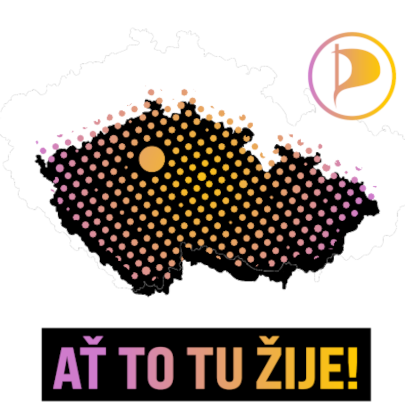
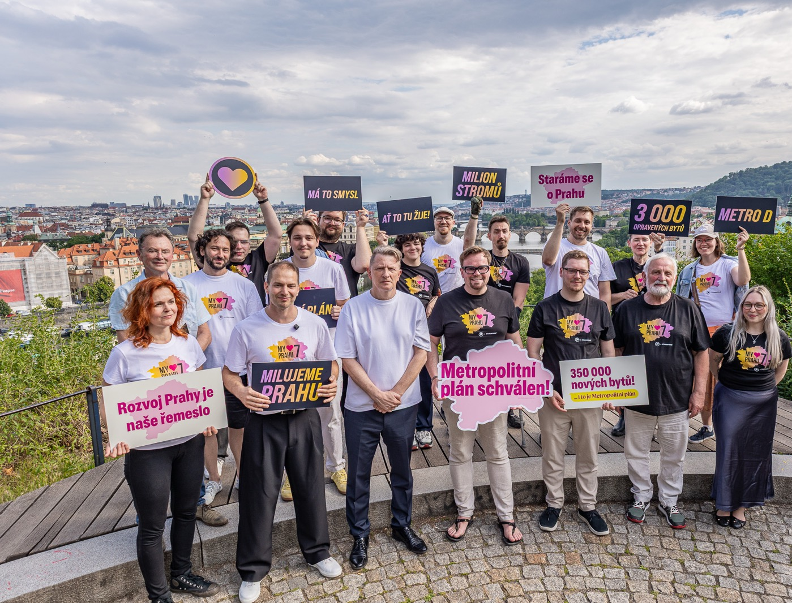
Volební koalice Pirátů a Starostů
MY ♥ PRAHU 7
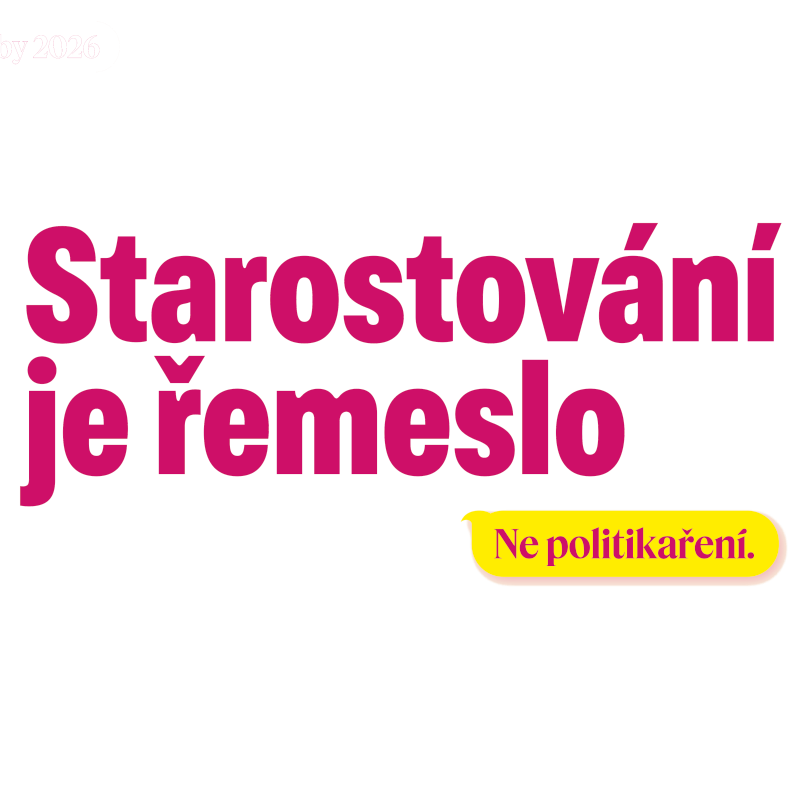
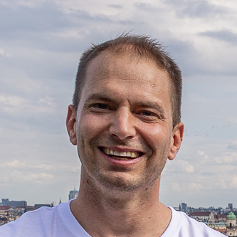
Piráti
Vrátíme na náměstí
lidi místo aut.
Ať to tu žije!
Ondřej Melena
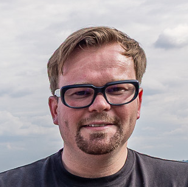
Starostové
Starostování
je řemeslo
Ne politikaření.
Lukáš Tůma
Naše priority pro Prahu 7
Sedm priorit pro Sedmičku
01
Dostupné bydlení
Navážeme spolupráci s Městskou nájemní agenturou, která zajišťuje dostupné bydlení. V Nových Bubnech budeme prosazovat model 30–30–30: až 30 % bytů pro dlouhodobé městské nájemní bydlení nejméně na 30 let a s nájemným alespoň 30 % pod tržní úrovní. Odmítneme obří nákupní centrum a budeme hlídat, aby výstavba neparalyzovala Sedmičku a vznikala jako klimaticky odolné město krátkých vzdáleností.
02
Školy pro budoucnost
Podpoříme modernizaci přístupu k výuce, aby připravila děti na výzvy současného světa, podpořila jejich finanční gramotnost a napomohla prevenci negativních jevů. Zajistíme lepší úroveň školního stravování, péče o duševní zdraví a prevence zubních onemocnění.
03
Klima plán
Chceme chladnější a zelenější Sedmičku, a proto vysadíme nové stromy a rozšíříme zelené zastávky, budeme podporovat ozeleňování vnitrobloků a veřejných budov pomocí vertikální zeleně. Chceme rozšiřovat i vodní prvky po celé městské části. U každé rekonstrukce ulic budeme prosazovat zadržování dešťové vody a ochlazování veřejného prostoru. Zřídíme veřejně dostupná ochlazovací místa pro období veder a podpoříme komunitní energetiku.
04
Podpora mladých a rodin
Budeme podporovat vznik dalších dětských skupin a zvýšíme příspěvky na kroužky. Pro mladistvé budeme podporovat vznik workoutových a víceúčelových hřišť, která budou propojovat komunitní setkávání všech generací. Budeme usilovat o lepší dostupnost pediatrické péče pro děti na Sedmičce.
05
Kvalitní život i ve stáří
Podpoříme aktivní život seniorů a volnočasové programy. Rozšíříme domácí a terénní péči, aby mohli lidé co nejdéle žít ve svém prostředí, a zřídíme pobytovou sociální službu dobře dostupnou MHD pro ty, kterým už domácí péče nestačí.
06
Živá a kulturní Sedmička
Chceme ulice, které nabídnou rozmanitost, kulturu, bezpečnost a bezbariérovost. Postaráme se o více košů, laviček a zřídíme veřejné toalety. Chceme udržovaná dětská hřiště a prostory pro volnočasové aktivity. Férově a transparentně podpoříme kulturu, sport i komunitní akce, festivaly, výstavy, koncerty a divadla.
07
Rozumné parkování a bezpečná doprava
Budeme prosazovat bezbariérovou prostupnost města, včetně odstranění nebezpečných míst pro nevidomé a lidi s pohybovým omezením. Pomůžeme prosadit parkovací reformu včetně záchytných parkovišť mimo obytné zóny. Prověříme funkčnost cyklopruhů. Bezpečnost budeme řešit cílenými úpravami, ne plošným osazováním sloupků. V modrých zónách navrhneme přísnější pravidla včetně vyšších sazeb pro nadrozměrná vozidla.
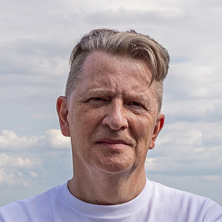
Jiří Padevět
do Senátu
Podpořte kandidáta parlamentní opozice
Komunální kandidátka
Celá kandidátka
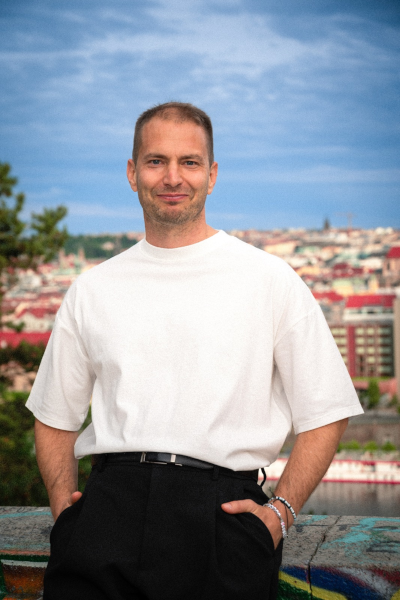
Bc. Ondřej Melena
Piráti
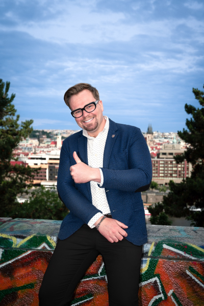
Ing. Bc. Lukáš Tůma, MBA
Starostové
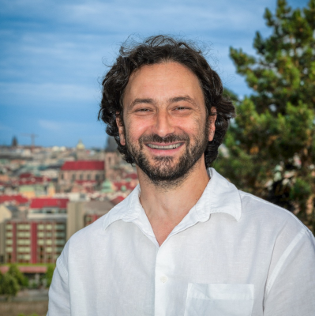
Mgr. Jakub Wolf
Piráti
Mgr. Jiří Vavera
Starostové
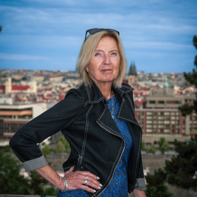
Ing. Lenka Nováková, MBA
Piráti
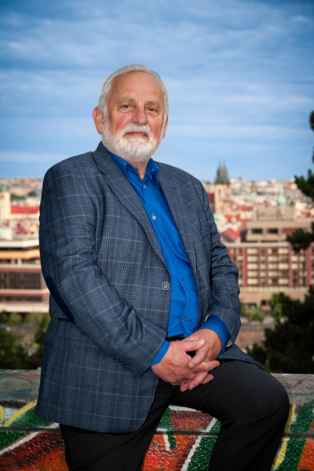
Mgr. Miloslav Mejzlík
Starostové
Marko Prole
Piráti
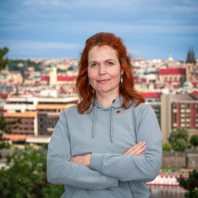
Michaela Králová, DiS.
Starostové
Michaela Samiecová
Piráti
Matej Páleník
Starostové
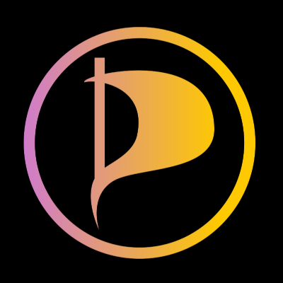
Ondřej Pastyřík
Piráti

Mgr. Zdeněk Prokeš
Starostové

Victor Christophe Sontag
Piráti

Prof. ak. arch. Jiří Pelcl
Starostové

MUDr. Lenka Mrázková
Piráti

Kristýna Burešová
Starostové

Bc. Vojtěch Šána
Piráti

Jessica Johnová
Starostové

Daniel Maximilian Schuschu
Piráti

Iveta Matysová
Starostové

Bc. Daniel Dobr
Piráti

Mgr. Filip Reinöhl
Starostové

MgA. Tereza Melenová, Ph.D.
Piráti

Ing. Michal Zvolský
Starostové

Petr Dvořák
Piráti

Jakub Kučera
Starostové

Mgr. Petr Paščenko
Piráti
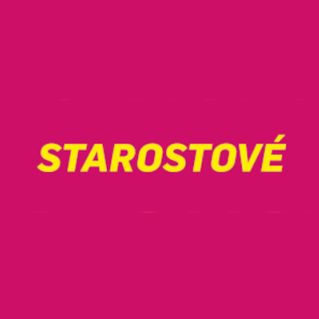
MgA. Klára Cibulková
Starostové

Mgr. David Lenský
Piráti
Komunální volby
9.—10. října 2026
Přijďte k volbám a kroužkujte celou kandidátku Pirátů a Starostů.